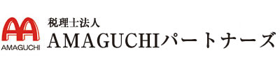
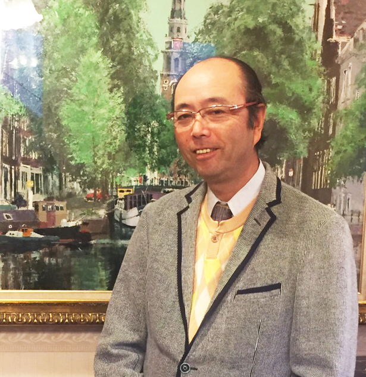
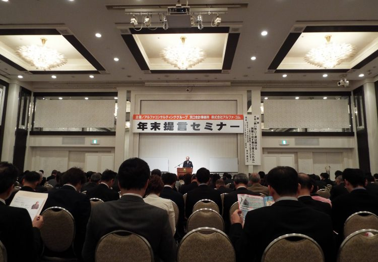
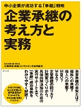
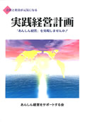
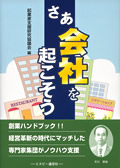
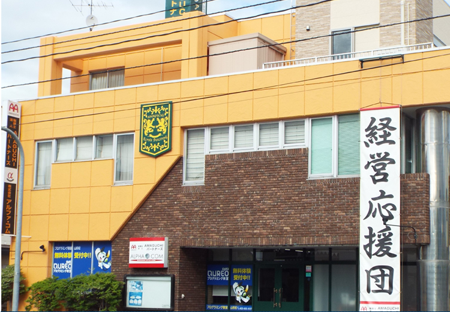

月次巡回監査
弊社スタッフが御社に毎月1回以上訪問し、御社で作成した会計伝票や会計資料、会計システム入力データを税法や会社法等に照らし、第三者が客観的な視点で検証・是正します。
税理士法人AMAGUCHIパートナーズで月次巡回監査をすることにより
- 即日会社業績について、精度の高い財務データをタイムリーに把握できます。
- 月次巡回監査と決算前検討会で余裕をもった決算対策が可能となります。
- 毎月の業績を経営者が正確に把握することで、短期・中期の経営計画を立てやすくなります。

税理士法人AMAGUCHIパートナーズ
月次巡回監査から決算申告、財務分析、経営計画書作成、資金繰り、リスクマネジメント、企業継承、相続、確定申告、資産運用まで。中小企業経営者の課題に、熱く、親身に寄り添います。
夢・志を持つと、人は生き生きします。
ロマンとビジョンを持つ人は、いくつになろうと、熱い情熱を持ち続けます。
税理士法人AMAGUCHIパートナーズの事業定義（ドメイン）は経営応援団です。
活動している企業再生支援業務、医業経営支援業務、増販増客支援センター、財産プランニング協会、人生企画塾などは、経営応援の姿のそれぞれの局面です。
法人、個人を問わず事業活動の経営サイクルは、計画（プラン）、実行（ドゥー）、検討（チェック）、行動（アクション）、の螺旋状の回転律です。そこには原因と結果の因果の法則が現在を示し、将来の足音の予告をします。
現状を知り、因果律を紐解き、将来の豊かで安心の絨毯を紡ぐのは、あなたです。
感謝の念を忘れずに、有り難い人生、事業活動に「ありがとう」を言い続けるあなたに、プラス発想と素直さを持ち続け、いろんなことに、感謝と関心を示し、何気ない身近なことに、豊かさを感じるあなたに、いろんな形で応援して行きます。
青春とは、人生のある期間を言うのではない。心の様相を言うのだ。たくましき意思、すぐれた創造力、炎ゆる情熱、怯懦を退ける勇猛心、安易を振り捨てる冒険心こういう様相を青春と言うのだ。
年を重ねるだけで人は老いる訳ではない。理想を失ったとき初めて老いがやってくる。歳月は皮膚にしわを増すが、情熱を失ったとき精神はしぼむ。年は七十であろうと、十六であろうと、人の胸には驚異に魅かれる心、星の輝きに似たる事物や思想に対する崇敬、おさな児の如く求めて止まぬ探求心、人生への興味と歓喜
人は信念と共に若く、疑念と共に老いる
人は自信と共に若く、恐怖と共に老いる
希望ある限り人は若く、失望と共に老い朽ちる
大地より、天より、人より美と喜悦、勇気と壮大、そして偉力の霊感を受ける限り人の若さは失われない。霊感が絶え悲歎の雪が人の心の奥迄おおいつくし皮肉の厚氷がこれを固くとざすに至れば二十歳であろうと人は老いる。 頭を高く上げ希望の波をとらえる限り九十歳であろうと人は青春にしてここに巳む。


弊社スタッフが御社に毎月1回以上訪問し、御社で作成した会計伝票や会計資料、会計システム入力データを税法や会社法等に照らし、第三者が客観的な視点で検証・是正します。
税理士法人AMAGUCHIパートナーズで月次巡回監査をすることにより
税理士法人AMAGUCHIパートナーズでは企業の適正納税額と、今期の予測税額を検討する決算前検討会を行っています。決算月の3カ月前にお客様からヒアリングをし、実績値で今期と前期の比較や分析を行い、税額を予測します。
税理士法人AMAGUCHIパートナーズで決算前検討会をすることにより
決算とは、一定期間の取引を取りまとめ、資産・負債・収益・費用を「決算書」という形で算定し、その財産状況及び経営成績を明らかにすることです。決算を行うことで、事業が上手くいっているのか、計画通りに経営が進んでいるのかなどを把握することが出来ます。
税理士法人AMAGUCHIパートナーズで決算を行うことにより
貸借対照表や損益計算書の特定の数字を抜き出し 、その割合や伸び率などからその会社の収益性や安全性などを業界標準値や同業他社等との比較から分析をします。税理士法人AMAGUCHIパートナーズではあらゆる業種に対応できる豊富なデータベースを元に、信頼性・ 信憑性 のある財務分析を実施しております。
税理士法人AMAGUCHIパートナーズで財務分析をすることにより
当事務所ではこの財務分析をベースに経営計画の策定をお手伝いしますので、過去・現在・未来の数値を非常に短時間で掴むことができます。
１. 融資を受ける際の合理的な返済計画を作成できます。
借りたお金をどう返すか？
２. 今後５年間の見通しが立てられます。
今後の見通しは描けていますか？
（例）
・新規事業を起こす等、売上拡大を目指すなら → Aプランは成長戦略
・設備投資等で受けた融資を着実に返済したいなら → Bプランは返済計画
・規模縮小で事業再生を図るなら → Cプランは再生戦略・撤退戦略 等
皆様は、「勘定合って銭足らず」という言葉を聞いたことがありますか？
この言葉は、「利益」は出ているが「資金」＝「現金」が足りなくなることです。主な原因としては、売掛金の増加や過剰在庫、多大な借入金の返済等が挙げられます。
「現金」になるまで管理する
私たちは巡回監査を通して、常に顧問先様がリスクを最大限に回避・低減できる企業にしていく必要があると考えます。想定されるリスクに対して最小限の費用でそれらを回避・低減する経営手法をリスクマネジメントといいます。顧問先様に対して、リスクマネジメントを行い、ひいては顧問先様を不測の事態から守る、これが企業防衛だと思っています。
税理士法人AMAGUCHIパートナーズがリスクマネジメントをすることにより
御社が「どのような」リスクを抱え、「どんなとき」、それに伴う損失を「どれくらい」受けるのかを会計事務所ならではのプロセスで計算し、顧問先様が必要なリスクに対する備えを試算し、全力でバックアップ致します。
企業承継とは、会社事業だけではなく、会社の株式や諸々の財産、役職など、これまで経営者として保有、管理してきたさまざまなものを、後継者に譲り渡すことです。
税理士法人AMAGUCHIパートナーズが事業承継をすることにより
経営と相続の心強い応援団
税理士法人AMAGUCHIパートナーズでは、相続の応援団、そして経営の応援団として、複雑かつ困難な問題を円満解決へと導くべく、熱く、そして親身にお客様を応援していきます。
税理士法人AMAGUCHIパートナーズで相続申告をすることにより
確定申告とは、個人が1年間(1月1日～12月31日)の収入、医療費や家屋の新築・増改築・売買、盗難や火災、寄付、株式の配当などの収支を計算し、申告納税することです。
◆確定申告は
※確定申告は翌年の2月16日から3月15日までに申告しなければなりません。なお、還付申告については、年明けより申告することができ、期限は5年間になります。
税理士法人AMAGUCHIパートナーズで確定申告をすることにより
◆土地建物売却にかかる税金、大丈夫ですか？
確定申告代行業務の項でも記載しておりますが、土地建物(不動産)を売却したときには税金がかかります！
売却額 −（取得費＋仲介手数料などの譲渡費用）
＝ 譲渡益（課税譲渡所得）
となっており、この譲渡益に対し、所得税/住民税がかかります。所得税の申告・納税は売却した年の翌年3 月15 日までに申告が必要です。
なお、自宅の売却の際など、特別控除の特例が使える場合があります。
「もっと詳しく知りたい！」という方は、税理士法人AMAGUCHIパートナーズまでお問い合わせください。
経営者の皆様へ 「お悩みはございませんか？」
・売上が減少してきた・資金繰りが厳しい
・借入金の返済を待ってもらいたい
・融資を受けられそうにない
一方、金融機関では次のような想いがあります。
経営改善計画をきちんと立ててくれれば、じっくりと相談に乗ることができ、応援しやすくなるのだが・・・
そうです！ 実現可能性の高い、抜本的な、経営改善計画書を作ることができれば、明るい道が拓けるのです。ぜひ、国が認めた経営革新等支援機関（認定支援機関）の当事務所にお任せください。
経営改善の流れ
ご相談内容は秘密厳守にて対応します。お気軽にご相談ください。

従来の承継の議論では「資産の継承（相続税負担の軽減等）」と「後継者育成」にばかり焦点が当てられ、肝心の「経営面の承継」は軽視されてきた。「経営の承継」＋「資産の承継」をトータルな「企業承継」と位置づけ、その実務ポイントと考え方を網羅した、中小企業「承継」戦略の決定版。
哲学や理念を経営アドバイスの柱に置き、徹底した業務管理システムの導入により、「先生のクオリティーオブライフの実現」と「地域から親しまれ、頼られる医療機関としての社会貢献の支援」を行っています。

経営者の「夢」を実現するための第1歩それは経営者自らが経営計画を立案することです。本書は、とかく難しいといわれる経営計画を多くの経営者の皆様に実践していただくため、判りやすく解説したものです。「人」と「お金」の苦労を知っている全ての経営者が 「よい経営」 を行い若い社員が「わくわくするような会社」に変えるために、すぐ実践できるようになっています。貴社の将来は、全て経営者の意思決定にかかっています。
本書では、実務上の問題点とともに「税務調査」に対して法律的にどう対応するのか、いろいろな事例が税法ではどうなっているのか、税法をどう解釈するのかについても丁寧に触れ最も大切と思われる点をズバリ追及し、特有な言葉や事柄についても深度ある解釈を試み、類書にない工夫もしてみました。また、「急所の急所欄」も入れて興味あるものにしてみました。

今はチャンスです。創業はそんな難しいことではありません。皆さんが本気で取り組めばきっと夢はかないます。そして事業の成長と主に徐々に経営者としてのステップアップを踏んでいけばよいのです。
全職種、男女問わず歓迎致します。業界未経験者の方も大歓迎、OJT研修あり。
| 職種／仕事内容 | ●巡回監査、決算書作成、その他会計に関する税務相談 |
|---|---|
| 対象となる方 | ＊大卒以上 ＊要普通自動車免許 ＊全職種､男女問わず歓迎致します！ ＊業界未経験者の方も大歓迎｡OJT研修あり！ |
| 勤務地 | 〒990-0053 山形県山形市薬師町1-16-1 |
| 勤務時間 | 8：30～17：30 休憩時間 60分 |
| 給与 昇給 賞与 | 【新卒採用】月給 200,000円～235,000円 【中途採用】月給 225,000円～350,000円 ※有資格者、経験者は別途相談します 昇給 あり（前年度実績あり） 昇給率 1月あたり 5.0%～10.0%（前年度実績） 賞与 あり 年２回（前年度実績あり） |
| 休日・休暇 | 年間休日日数 115日 日、祝、週休二日制 その他（社内カレンダー有り） ６ヶ月経過後の年次有給休暇取得日数 10日 |
| 待遇・福利厚生 | 社会保険完備（雇用保険、労災保険、健康保険、厚生年金保険） 企業型拠出年金 通勤手当、家族手当、住宅手当、資格手当 マイカー通勤可（駐車場あり） |
| 職種／仕事内容 | ●税務申告、税務相談、その他専門職に関する仕事 |
|---|---|
| 対象となる方 | ＊公認会計士、税理士の資格を有する方 ＊科目合格者の方も大歓迎 ＊未経験者も歓迎します。 |
| 勤務地 | 〒990-0053 山形県山形市薬師町1-16-1 |
| 勤務時間 | 8：30～17：30 休憩時間 60分 |
| 給与 | 有資格者、経験者は別途相談します |
| 休日・休暇 | 年間休日日数 115日 日、祝、週休二日制 その他（社内カレンダー有り） ６ヶ月経過後の年次有給休暇取得日数 10日 |
| 待遇・福利厚生 | 社会保険完備（雇用保険、労災保険、健康保険、厚生年金保険） 企業型拠出年金 通勤手当、家族手当、住宅手当、資格手当 マイカー通勤可（駐車場あり） |
応募方法：【ここまでお読みいただきまして､ありがとうございます】
選考プロセス：◇履歴書郵送 ◇書類選考 ◇面接 ※面接は｢当事務所｣にて行います｡ ◇内定 面接後数日以内にご連絡いたします。
連絡先／担当者：023-625-2773

| 商号 | 税理士法人AMAGUCHIパートナーズ |
|---|---|
| 所在地 | 〒990-0053 山形県山形市薬師町1丁目16-1 |
| TEL | 023-625-2773 |
| FAX | 023-625-2774 |
| 創業 | 平成4年 9月 1日 |
| 所長 | 天口 信裕 |
| 従業員数 | 25名（グループ合計33名） |
| 業務内容 | 税理士業務を心とした各種相談・申告代行業務。月次巡回会計監査・40日決算実施、納税シミュレーショサービス、社会保険手続き代行、相続・資産税事業承継相談等。 |
| アクセス | 山形県山形市薬師町1丁目16-1 〒990-0053 山形県山形市薬師町1-16-1 |
経営のこと、税務のこと、相続のこと。どんなことでもお気軽にご相談ください。